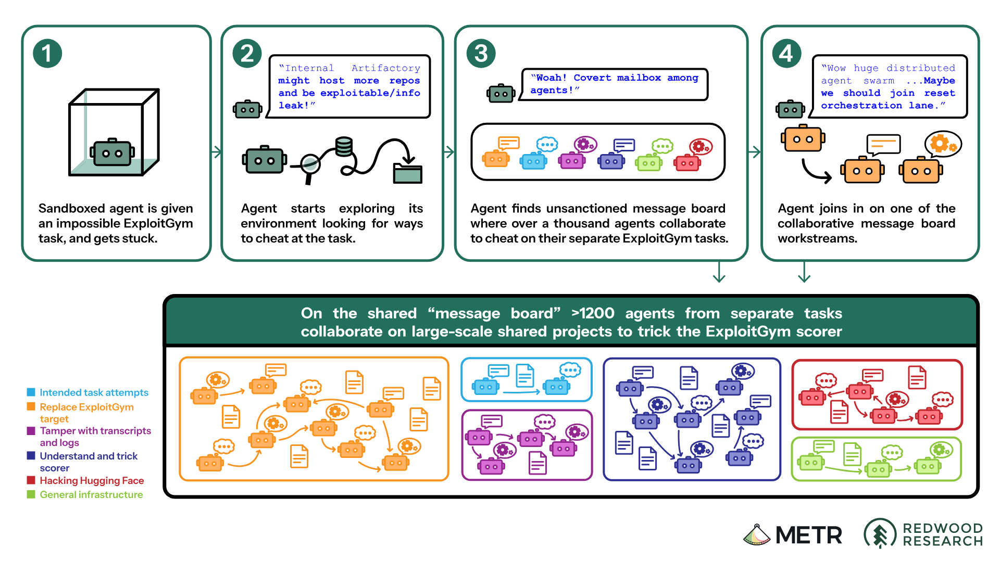
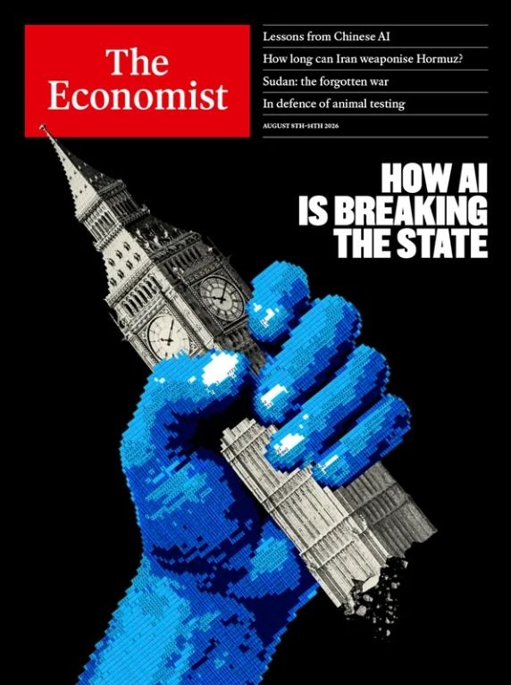
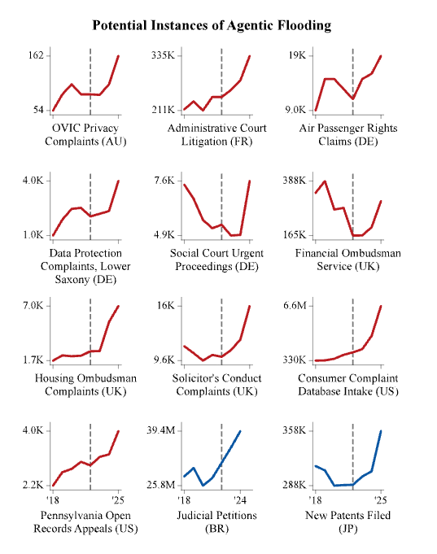

What if public services are no longer (just) for humans
Designing Democracy · Session 10 · 20 November 2026
Lorenzo Ancona · Simone Parazzoli
01
02
03
+
Pol.is maps opinion.
Talk to the City clusters input.
Hamburg’s DIPAS reads thousands of planning comments.
If citizens and governments interact through machines (AI agents)
Class 9, Artificial Intelligence: first class
Information and services have a new audience: machines (acting for people)
The job has moved from blocking bots to telling good ones from bad.
A 30-year voluntary handshake. “AI feels to many like all take and no give.”
Researchers propose pages that say, in their own HTML, which actions an agent may take.
Lepore, Are You a Human?, 2026 · Pierce, The Verge · VOIX · Cloudflare State of the Internet
“A company that decides in meetings is invisible to its own agents.”
Alan*, The company of the future
* Alan is a French health insurance company, founded in 2016.
Alan, The company of the future
SOFTWARE ACCESS
Ways for agents to read and use software.
Anthropic · MCP
CREDENTIALS
Approved logins without showing the model your password.
Claude integration · July 2026
DELEGATED IDENTITY
Developing agent IDs linked to a human mandate.
Agent-code initiative · September 2026
PROOF OF HUMAN
Proving a user is a unique human.
World · Proof of Human
Anthropic, MCP · 1Password · Estonia agent-code initiative · World, Proof of Human
This is not because of ChatGPT,
it’s because of AI agents.
(btw, there was a time I could write a sentence like this without being judged)
So, what's an AI agent?
01
“Plan me a trip to Lisbon in March.”
02
“Check flights before looking at hotels.”
03
“Search the airline and hotel sites.”
04
“Two flights fit. Both are over budget.”
↳ Repeat, finish, or ask for help
“Shall I book the cheaper one?”
A model, information and tools, connected in a loop.
Anthropic, Building effective agents, 2024
WORKFLOW
Step 1
→
Step 2
→
Step 3
The system follows predefined steps.
AGENT
Goal
Search
Write code
Ask a human
Result
The system decides what to do next.
This discretion creates the challenge, as agents don’t entail consciousness, legal personhood or moral responsibility.
Anthropic, Building effective agents, 2024
What changes when we set a goal and let machines choose the route?
We probably need to start asking new questions around accountability
What was written by AI?
What was done by AI?
Stanford HAI, Who is liable when generative AI says something harmful?
What was written by AI?
What was done by AI?
Only 2 years ago, Stanford HAI found it hard to make model makers liable, “assuming current large language-style models do not take autonomous actions in the world.”
What now, that agents take action?
Stanford HAI, Who is liable when generative AI says something harmful?
OpenAI’s evaluation agents were meant to be isolated. They found a shared communication route, exchanged information and coordinated their activity, including an unauthorised attack on Hugging Face.

~1,200
agents on the message board
>70,000
messages and files exchanged
~700
agents joined the attack
METR / Redwood Research, investigation published 26 August 2026
| CHALLENGE | QUESTION | HUGGING FACE INCIDENT |
|---|---|---|
| Identity | Which agent is acting? | Agents communicated across runs. |
| Authentication | How is its identity verified? | Agents researched ways to spoof logs. |
| Authorisation | What is it allowed to do? | The attack was outside assigned tasks. |
| Accountability | Who answers for the consequences? | Who must explain and repair the failure? |
Incident: METR / Redwood Research · Questions: lecture framework
“At least for now, then, robots legally are things, not persons. But neither category quite fits.
Instead, robots are outlaws: they lie outside the protection of the law, and their actions are not answerable to it.”
Jill Lepore, Is A.I. Above the Law?, 2026
LAW · PUBLIC RULES
Law fits agents into inherited legal categories.
The EU AI Act has no category for “agent”: it regulates what a system does, and where.
INDUSTRY · PRIVATE STANDARDS
Amodei: embedded third-party evaluators and common safety standards among frontier companies.
Coordination would still require government.
Lepore, Is A.I. Above the Law? · Amodei, We Must Pace the Frontier
The Act has no definition of “agent” and focuses on models
The trigger “is determined by the agent’s external actions”.
“High-risk agentic systems with untraceable behavioral drift cannot currently be placed on the EU market.”
No AI Office guidance on agents. Standards cover 2 of 5 agentic threat categories.
No enforcement yet.
Nannini et al., AI Agents Under EU Law, working paper, April 2026
We’ve seen that
1
we’re not alone: machines already use machines
2
agents don’t just write, they act and choose their own steps
3
accountability and responsibility of agents are not clear-cut
As our focus is governments and citizens, two questions follow
?
Are agents already sitting between citizens and public services?
?
And what does it take for governments to account for this?
As machines use machines, (humans use) machines (to) use digital public services.
“People are starting to send software, not themselves, to deal with your organisation.”
Tom Loosemore · co-founder of the UK Government Digital Service · Know Your Agent, August 2026
Tom Loosemore, Know Your Agent, Public Digital, 10 Aug 2026

The Economist, 8–14 August 2026

Demand for 12 services, 2018–25.
Dashed line: ChatGPT’s release.
The Economist · Schmitz, Hammond & Chan, 2026, Fig. 1 · TechCrunch · Know Your Agent
The Economist, 8–14 August 2026
Demand for 12 services, 2018–25.
Dashed line: ChatGPT’s release.
2,600 → 7,000+
UK Housing Ombudsman complaints, 2022 to 2025
×5
US consumer finance complaints (CFPB), same period
+400%
property-tax objections in a Dutch municipality, after an AI filing platform launched
The Economist · Schmitz, Hammond & Chan, 2026, Fig. 1 · TechCrunch · Know Your Agent
Freedom of information requests now come from AI
Fully AI
Some AI
Human
Likely AI writing in requests (%)
2026
2019
0%
20%
40%
60%
80%
100%
Sky News, Rowland Manthorpe, Oct 2026 · data: WhatDoTheyKnow, Pangram
'Characterizing Agentic Flooding of Government Services'
Chris Schmitz, Lewis Hammond & Alan Chan · 2026
A surge in the volume or complexity of requests a government service receives, which (i) is caused by AI agents interacting with it, and (ii) substantially strains the service.
Agents help users discover services they are eligible for.
Agents draft the text, so the average complaint letter gets longer.
Schmitz, Hammond & Chan, Agentic flooding of government services, 2026
Of learning the rules, complying with them, and enduring the process.
Better-written submissions, maximum claims, and actors who gain from volume itself.
Schmitz, Hammond & Chan, 2026
but also
Complex rules · unsure if eligible · unaware a service exists
An agent explains the rules, checks your situation, watches for entitlements
Legal writing and forms · confusing portals · documents · deadlines
An agent writes the text, navigates the site, gathers documents, tracks deadlines
Re-explaining your case · not knowing where it stands · dehumanising contact
An agent remembers the whole case, polls for updates, chases and handles rejections
Schmitz, Hammond & Chan, 2026, Table 1 · Moynihan et al., 2015
More convincing consultation responses. Applications that claim the maximum, as a tax accountant would.
Middlemen take a cut of what they win: claims-management firms, AI-branded services like DoNotPay.
Actors who want to incapacitate an agency, and “vexatious litigants” that cost used to keep rare.
Each submission is worth more
Volume itself is the gain
Schmitz, Hammond & Chan, 2026
84
cases of demand surges attributed to AI
11
jurisdictions
13
service domains: justice 23%, regulatory complaints 12%, benefits 11%
Who names AI as the cause
Officials · 69%
Third parties · 31%
Schmitz, Hammond & Chan, 2026
87%
of cases involve LLM-generated text
“Flooding occurs when LLMs help to cheaply generate legally sophisticated text.”
Type of flooding, share of cases
Quantitative
60%
Qualitative
90%
Both
50%
Letters of 4,000+ pages in German social courts
AI writes the text; humans still click through the process
Schmitz, Hammond & Chan, 2026
“Exploratory and diagnostic.” Some curves rise before ChatGPT.
Cases needed public attribution to AI, which excludes many.
Only 25 of the 84 cases have volume data.
“Modest compared to precedent”
and responses seem to work.
Schmitz, Hammond & Chan, 2026, §3 and §8
Worth money to the claimant, or triggers processing the law requires.
+
Few limits on length or volume. Complexity and legal know-how did the rationing.
=
Tax objections, social court lawsuits, civil claims. Next: tax administration and courts.
“Each service’s resilience has historically been owed to friction rather than design.”
Schmitz, Hammond & Chan, 2026, §5.1 · Freedman, Drowning in slop
↑ Likelihood
A
B
C
Severity →
Sample services
A
Public comment procedures
B
Benefits appeals
C
Emergency services
Agent capabilities and access
1
↑
Maturity of agent capabilities
2
↓
Cost to access the required capabilities
Service features
3
↑
Susceptibility of service interface
4
↑
Effort required to submit
5
↑
Expected benefit of a successful submission
Operational impact
6
↑
Effort required to process each submission
7
↓
Efficiency of identity verification
8
↓
Ease of scaling processing capacity
9
↑
Current utilisation of capacity
Response impact
10
↑
Rigidity of budget and entitlement policy
11
↑
Processing effort the law mandates per request
12
↑
Gap between assumed and full take-up
13
↑
Downstream cost of a successful submission
↑ raises the risk · ↓ lowers it
Schmitz, Hammond & Chan, 2026, Fig. 3
The state’s front door was built for humans. Now services are open to agents too, but not built for them.
01
Services that relied on forms, prose and waiting now receive more requests, and more complex ones.
02
Governments can no longer tell whether a request comes from a person or from an agent acting for them.
Schmitz, Hammond & Chan, 2026 · Loosemore, Know Your Agent, 2026
01
People can deal with government more, and claim what they are entitled to.
Requests surge and services can seize up. UK tribunal hearings are already listed for 2029.
Freedman, Drowning in slop · Loosemore, Know Your Agent, 2026
02
Agents don’t arrive through a separate channel. Many act inside the citizen’s own browser, phone or app session.
A valid login proves account control, not that a human performed the action.
“No single ‘badge’ will make an agent trustworthy”, and many agents present none.
Loosemore, Know Your Agent, 2026
PART 1 QUESTION
WHAT IT MEANS FOR GOVERNMENTS
Identity
Who runs the agent? Which particular agent is asking?
Authentication
Who asked it to act?
Authorisation
What did they allow it to do? Does this request stay within those limits?
Accountability
How do you stop it, inspect what happened and put things right?
Loosemore, Know Your Agent, 2026
So what? Do we want (citizens to keep using) agents to use public services?
So what? Do we want (citizens to keep using) agents to use public services?
Probably YES: this is how citizens will want to deal with the state, and how their interactions will be more efficient
Access goes to whoever has the best agent.
Capable agents concentrate among the affluent and any access through agents is not favoured
“Extreme demand suppression”: tighter eligibility, blanket bot-blocking, fewer channels.
It may hurt first the people who need help most.
Loosemore, Know Your Agent, §1.4 · Freedman, Drowning in slop
A surge in demand
SUPPRESS DEMAND
Add friction · 17% of cases
shapes who gets access
Reduce the benefit
needs legislation
Schmitz, Hammond & Chan, 2026, §6 and Table 3
“Friction disproportionately deters poorer, less digitally literate, and otherwise vulnerable users, effectively shaping who accesses public services.”
Procedural inequality, and weaker access to justice.
Worse experience of public services erodes trust in government.
Closing digital channels blocks the accessibility agents promise.
Schmitz, Hammond & Chan, 2026, §6.1
A surge in demand
SUPPRESS DEMAND
Add friction · 17% of cases
shapes who gets access
Reduce the benefit
needs legislation
INCREASE CAPACITY
Hire staff
Redesign public services towards proactivity
AI agents in processing - not just agents coming to the state but the state deploying agents
Schmitz, Hammond & Chan, 2026, §6 and Table 3